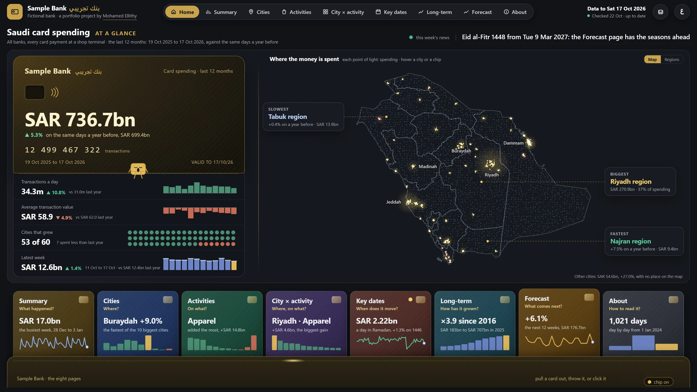
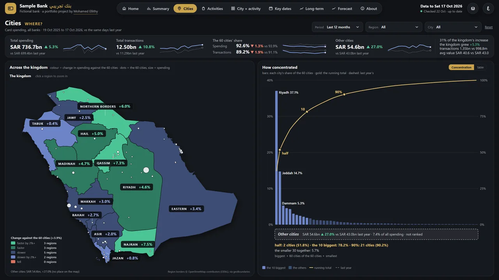
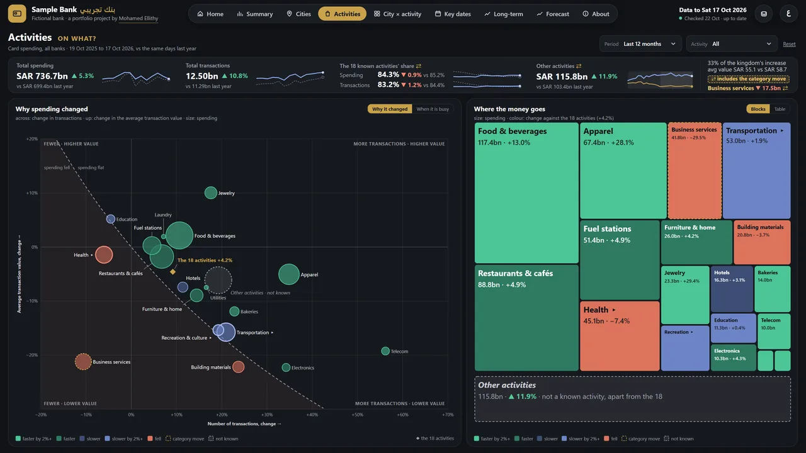
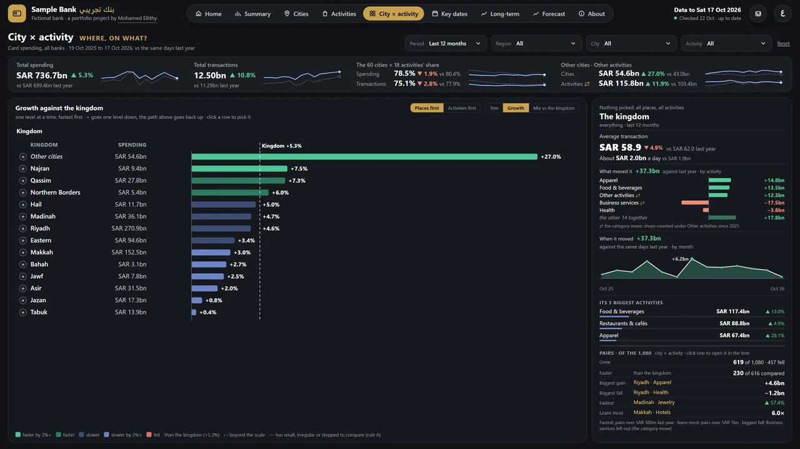
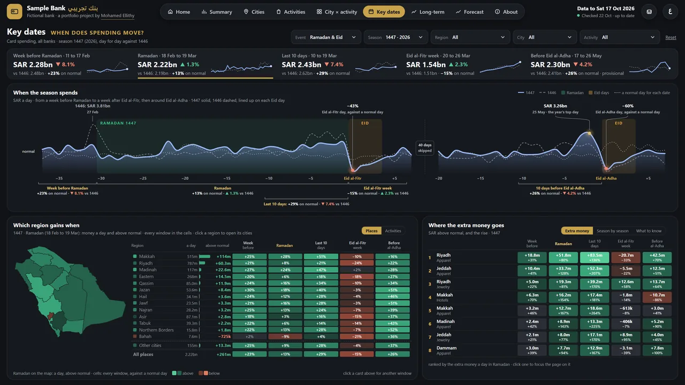
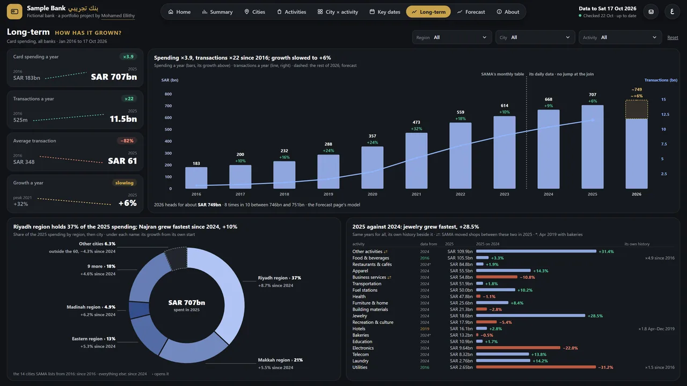
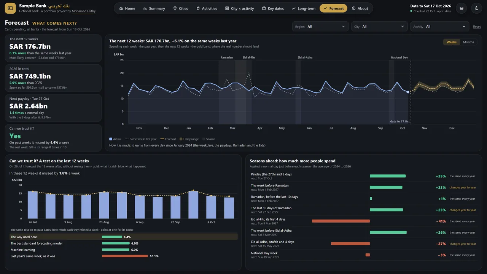
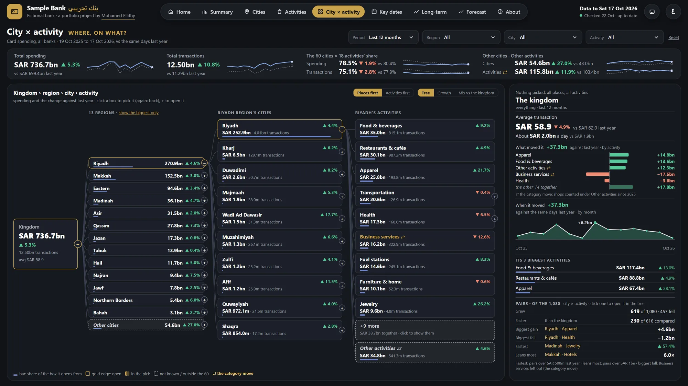

Saudi Card Spending
3.9 million daily figures, checked against SAMA, in one bilingual dashboard
SAMA publishes card spending in three separate forms. No single place showed what was spent, where and on what, day by day.
A pipeline that collects all of it and checks it week by week against SAMA’s own reports, with a bilingual dashboard on top.
3.9 million daily figures. 9,816 of 9,836 weekly city figures equal SAMA’s reports.
Dashboard
About the data. Every chart on this page is drawn from SAMA’s real published numbers. The dashboard pictures are screenshots of the public live page.
What came out
of 9,836 weekly city figures equal SAMA’s PDFs within rounding
holds all 20 misses: 24 to 30 Mar 2024, where the PDF is short by about half of Saturday 30 March
growth in card spending, the 52 weeks to 17 October 2026: 736.7 billion riyals
riyals on food and beverages on Friday 28 Feb 2025, the day before Ramadan: the highest day of any activity in 1,021 days
What it is
A data pipeline, its checks, a data model and a dashboard in Arabic and English that show where people in Saudi Arabia pay by card at shop terminals, on what and on which days, since 2024.
The question
SAMA, the Saudi Central Bank, publishes card spending in three forms that never meet: a weekly PDF report since 2020, a monthly table back to 2016, and since 2024 a daily table on its portal that gives five cities at a time. The public weekly table splits spending by city or by activity, never both.
So no one could see where people in Saudi Arabia pay by card, on what and on which days, without putting all of it together and checking that the pieces agree. The dashboard is for anyone who needs that picture, from a shop choosing its next city to a bank’s cards team.
What it does
Nine pages, each answering one question. Every chart can be clicked to filter the rest, and every page reads in Arabic and English. Eight views from the live page:








How it works
- 01Collected all of it 315 weekly PDF reports from June 2020, the monthly table for 2016 to 2023, and the daily data from 1 January 2024, 3,924,724 figures with none empty, pulled from the portal’s form five cities and one month at a time.
- 02Read the PDFs into one table One weekly table from the 315 reports, with 46 SQL checks on it.
- 03Made the two sources meet Summed the days into Sunday-to-Saturday weeks and set them against the PDFs for every city: 9,816 of 9,836 weekly figures match within rounding.
- 04Built the model and the refresh A star schema in DuckDB, and one command that reruns every step and stops if any check fails.
- 05Built the dashboard First in Power BI with DAX, then as a web page on the same model: nine pages in Arabic and English, every chart clickable, the Arabic pages fully right to left.
The data model
The Power BI model behind the dashboard, drawn from its model file: ten tables joined by eleven relationships, keys only. The helper tables with no relationship (labels, checks, slicers) are left out.
- city_keykey
- city, city_ar
- region, region_ar
- largest10
- activity_keykey
- activity, activity_ar
- parent_key
- activity_19_key
- cell_keykey
- City, Region
- Activity
- date_key→ dim_date
- city_key→ dim_city
- activity_key→ dim_activity
- cell_key→ City activity
- payments, value_sar
- week_key→ dim_date
- city_key→ dim_city
- activity_key→ dim_activity
- payments, value_sar, days
- cell_key→ City activity
- saturday_key
- show_growth
- date_keykey
- day, week_start, month
- hijri_year, ramadan_day
- is_gov_payday
- week_key→ dim_date
- long_key→ dim_long_series
- payments, value_sar
- month_key→ dim_date
- payments, value_sar
- long_keykey
- long_series, kind
The grain
One row per day, place and shop activity: 61 places (the 60 listed cities and “outside the 60”) by 27 activity leaves, with the number of payments and their value in riyals. Every total is a sum of those rows.
Totals are checks, not rows
SAMA’s own printed totals, for the country, each city and the three parent activities, sit in a table apart. The checks prove the leaves add up to every one of them.
A week means Sunday to Saturday
The same week as SAMA’s PDFs, so the daily data and the weekly reports can meet on every city and activity.
24 to 30 March 2024 is the one week where the two sources differ: SAMA’s weekly PDF is short by about half of Saturday 30 March in every series. The daily data is used there, and the dashboard says so.
Every day, every activity
Each line is one activity, each point one day from January 2024 to October 2026, its height the day’s spending. The busiest stretches line up before Ramadan and Eid. Point at a line to read the day.
How I checked it
Every number on the dashboard has to agree with SAMA and with the database behind it. The first check is the one below: SAMA’s two publications, set against each other for every city and week.
- Within rounding (a PDF prints whole thousands)
- Apart: 24 to 30 Mar 2024
9,836 weekly city figures from 7 January 2024 to 17 October 2026, number and value: 9,816 sit on the zero line, within rounding. The 20 that do not are the ten cities in the week of 24 to 30 March 2024, each 6.6% to 8.2% short in the PDF.
Each dot is one city’s week, number or value: the PDF minus the portal’s days, as a share of the week. Ten cities until June 2025, then all 60 and the rest, as the PDF lists them.
- The daily data, summed into weeks, equals SAMA’s weekly reports for every city within rounding: 9,816 of 9,836 weekly figures. The 20 that do not are the ten cities in one week, each short in the PDF by 6.6% to 8.2%.
- Every day, the activities add up to the total and the cities to the kingdom.
- Every page’s numbers are compared with SQL on the database at several data end dates.
- Every filter choice is tried, and planted mistakes must be caught.
- Every page is measured for text over text, cut words and English left in the Arabic, at three window sizes.
What I would do differently
I would set the weekly refresh to run on its own from the start. Today one command pulls the new week, builds the model again and runs every check, but it is still started by hand.
Tools and links
- Python
- pandas
- requests
- SQL
- DuckDB
- Power BI
- DAX
- JavaScript
- SVG
The public repository holds the dashboard page only. The code, the data and the Power BI files are private, and I can walk through them in an interview. Data: Saudi Central Bank (SAMA) Open Data Portal.